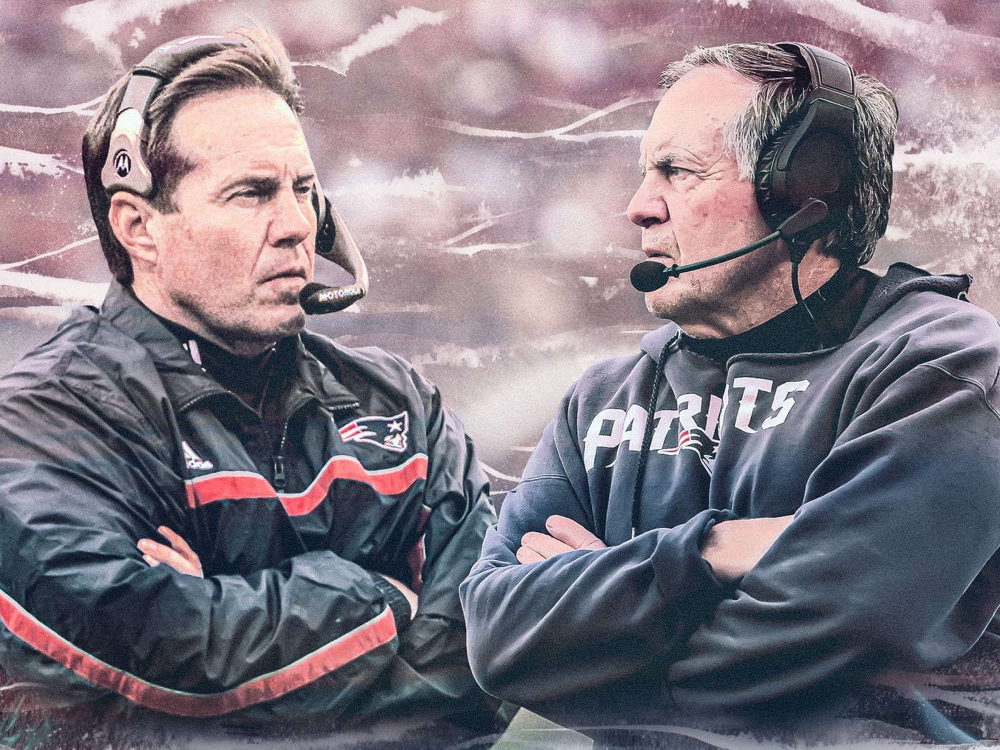

The New England Patriots enjoyed one of the most dominant stretches of consistent winning in NFL history from 2000-2019.

From 2001 to 2019, New England won an astounding 76.3% of their regular season games, giving them an average of 12 wins per season. Their playoff success was arguably even more impressive - with an 80% win rate in the first and second round, the Patriots were essentially a lock to make the Conference Championship game every single year. At one point, New England made an NFL record eight straight conference title games from 2011-2018.
The Coach
The dynasty sparked in 2000, when the Patriots traded a first-round draft pick to the Jets in exchange for head coach Bill Belichick – who would become one of two main figureheads of the two decades of success that followed. The Belichick hiring provided a foundation and stable voice for a franchise that had long lacked a general direction or culture, being the laughingstock of the league for most of the 1900s. It was not long until Belichick assumed the role of general manager as well, using his ability to efficiently and effectively handle the team’s finances and draft choices to sustain perpetual success for the following 20 years.
Belichick had an legendary track record as a general manager for most of his career – statistics show that his ability to find gems with mid to late round draft picks was consistently near the top of the league. Even more impressively, Belichick had the infamous ability to acquire players that other teams gave up on – developing players that most people thought were in the twilight of their careers into legitimate contributers, and even stars. As the old saying goes, one man’s trash is another man’s treasure. Belichick was able to adopt this motto at an incredible, consistent clip. Every year for most of his tenure, he would draft future stars out of traditional powerhouse schools in states like Texas, Florida, California and Georgia, but also possessed an all-time ability to pull absolute gems out of small schools less known for their football programs like Rutgers, Kent State and Louisville.
The Quarterback
But Belichick’s greatest draft steal and accomplishment as the Patriots’ kingpin was undoubtedly the 199th pick of the 2000 NFL Draft – a 6th round pick that Bill Belichick used to take Michigan Quarterback Tom Brady. Seen as the greatest draft steal in American sports history, Brady’s rise from 6th round afterthought to greatest football player of all time – coupled with Belichick’s wizardry as a head coach created an absolute buzzsaw of a “power couple” that had the Patriots at or near the top of the league for two decades.
Brady began his rookie training camp as the number four quarterback on the Patriots' depth chart, facing a steep uphill battle to playing time and even making the team - always staring a termination of his contract right in the eyes. However, consistent play on the practice field allowed him to work his way up the ranks and an unfortunate, near fatal injury to starting quarterback Drew Bledsoe thrust Brady into the starting position - a job he took, ran with and never gave back.
Brady went on to shatter nearly every quarterback record there is to shatter - winning six Super Bowls with the Patriots and one with the Buccaneers late in his career in the process. His consistent Hall of Fame level play year after year ensured that the Patriots would be a double digit win team and Super Bowl contender regardless of the roster quality surrounding him. Brady had a knack for elevating players around him - turning middling receivers struggling to make a name for themselves into legitimate starting receivers through his exceptional quarterback play.
The Patriots had their struggles - it was not exactly a plethora of endless championships during the two decade long run. A ten year stretch from 2004-2014 where they failed to win a championship serves as a blemish on the teams otherwise loaded resume, losing two to the New York Giants in the process. But Brady's dominance and consistency kept them in contention for a title year after year after year.
Late Round Success
Belichick had a number of famous late round steals - but his selection of Kent State Quarterback Julian Edelman in the 7th round of the 2009 NFL Draft turned into one of the greatest draft stories of all time. Edelman was a lifelong quarterback who had never played wide receiver a day in his life, but was converted to wide receiver post-draft. Belichick’s coaching, development and eye for late-round talent went on to turn a kid unfamiliar with the receiver position pre-professional level into a future Super Bowl MVP, perennial producer and one of the key cogs of New England’s dynasty.
Edelman served as New England's primary slot receiver and consistent 3rd down chain mover for the next 11 seasons, making multiple fourth quarter, championship winning catches. He retired in 2021 after chronic knee injuries diminished his ability to run consistently.
The Future
As sports history continues to churn on, the New England Patriots dynasty will long be remembered as a staple of near-perfect success at the professional level.